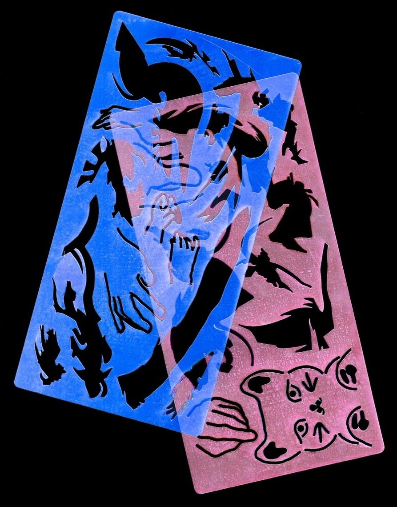
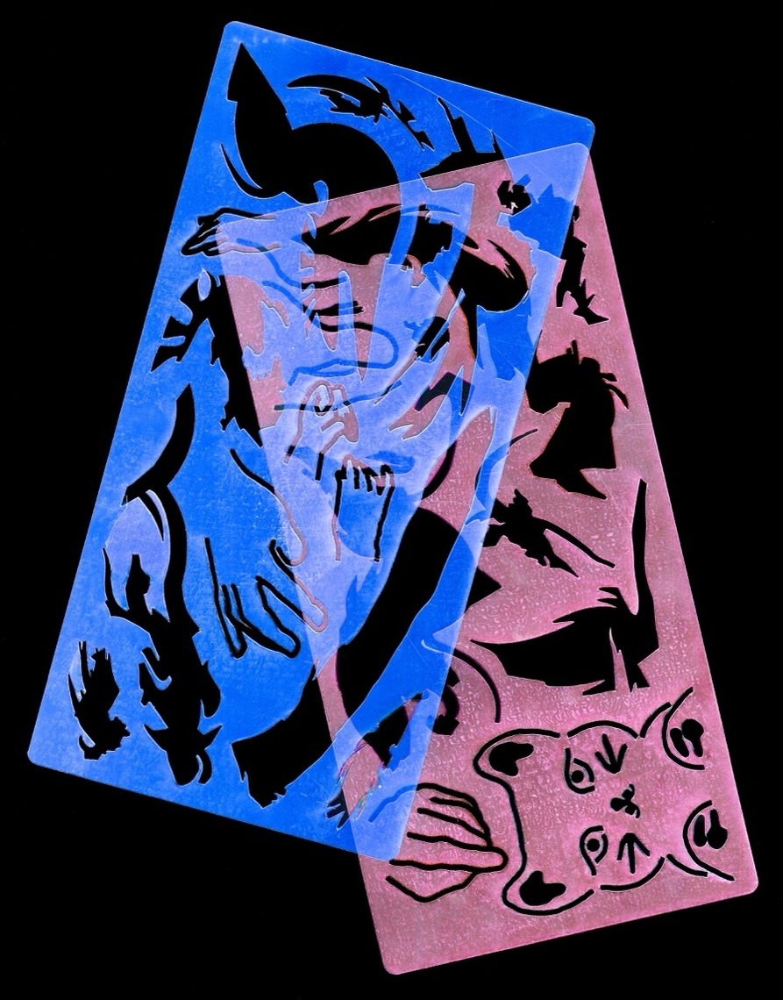

Le Chat, le Chardon et la Caslon
Identité visuelle des portes ouvertes 2025 de l’ENSAD Nancy. Un fleuron typographique représentant un chardon est à l’origine de l’identité. Il est issu du revival de la police de caractère Caslon par Carol Twombly (1990). La déformation de cet ornement nous a permis de créer un écosystème graphique fragmenté. Ce signe devient la plus petite unité du système décliné sur toute l’identité. Visual identity for ENSAD Nancy's 2025 open day. A typographic flourish representing a thistle forms the basis of the identity. It is derived from Carol Twombly's revival of the Caslon typeface (1990). By distorting this ornament, we were able to create a fragmented graphic ecosystem. This symbol becomes the smallest unit of the system, which is used throughout the identity.
Nancy
2025
affiches posters 120 × 180 cm, 29,7 × 42 cm, 85 × 200 cm
{vidéo 1080 × 1080 px de 20 s}
{vidéo 1080 × 1920 px de 12 s}
visuels médias sociaux social media visuals
 
